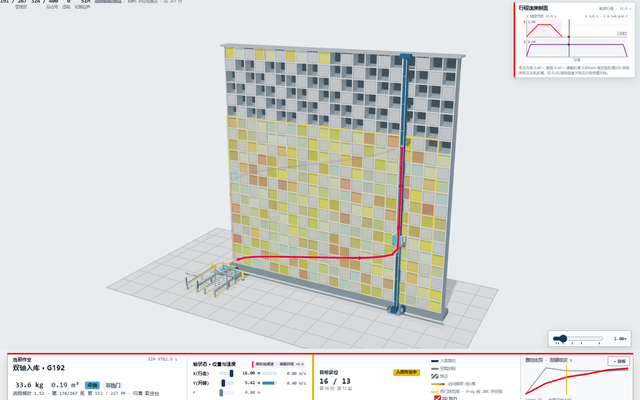
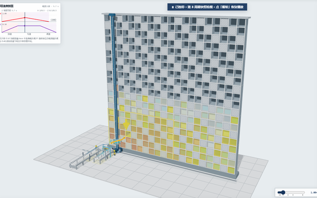
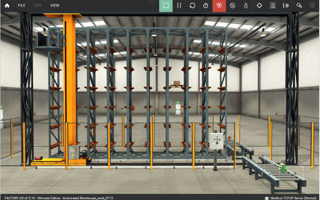

01
连续入库
空仓 0 → 267 的逐件放置决策
三种在线算法同一到达队列、同一数据门并排推进,可逐件看「为什么选这一格」。
267 件 / 400 格三算法同帧对照梯形加减速剖面
是什么30 个未参与调参的 seed(10001–10030)上,频次加权期望取货时间的均值 ± 样本标准差。
口径与边界30/30 seed 全部正收益,失败与约束违规均为 0;5-seed 8.40±0.48 s 仅作回归锚,不与本值混用。
python sim/final_test_30seed.py
是什么AWRA-LS 相对顺序放置基线(SEQ)的频次加权期望取货时间相对降幅。
口径与边界同批同 seed 对照(CRN);由 seq 21.242 s 与 awra 8.168 s 复算为 61.5%,官方口径按更高精度中间值记为 61.6%。
sim/out/final_test_30seed.csv
是什么Automation Builder PC 仿真中 77 项断言全部通过、0 失败,覆盖初始化、分配、策略、边界与状态机。
口径与边界编译+在线回读级证据,验证 ST 逻辑在该环境成立;不外推为实体 PLC 现场闭环。演进:0712=75 → 0716 加 T76=76 → 0717 加 T77=77。
plc/06_PRG_Test.st:12 · tools/ab_scripting/logs/runtest_result_20260717_010514.txt
是什么场景检测器(lexicographic 档)在 390 个可比实例上所选**策略**,相对 per-instance 后验最优(VBS/oracle)的达成率 = exp_t_VBS / exp_t_sel × 100,仅在 excess_fail=0 的可比域计算。
口径与边界测的是「选得对不对」而非某个固定策略自身成绩——同表中固定用 AWRA 的达成率为 81.61%(匀速)/ 88.61%(加减速),与本数不是一回事。两种运动学口径分别标注,均非理论上限。
python sim/oracle_gap.py [--accel]
是什么Factory I/O 54 格场景中,三个仓位各三次完整取放链(出箱→取货→行车→放置→收叉)全部运行成功。
口径与边界54 格代表性场景的 Python 直控技术预演,验证动作链与 I/O 时序;不构成 400 仓位物理孪生或现场闭环。
l2_factoryio/F3_H5证据保全_0716.md



本作品面向 20 列 × 20 层单巷道自动化立体仓库的仓位优化问题,提交材料含初赛三项(建模及仿真、验证报告、AC500 编程实现)与决赛两项(可视化仿真编程实现代码、演示录屏)。
| 目录 | 内容 | 对应赛段 |
|---|---|---|
| 验证报告 WORD 主文档与 PPT 答辩版 | 初赛 | |
| Automation Builder 完整工程、ST 源码导出、在线测试证据 | 初赛 | |
| Python 仿真源码、场景库、统计产物与一键复现入口 | 初赛 | |
| 自研 Web 三维可视化仿真源码、数据看板与演示录屏 | 决赛 | |
| Factory I/O 场景文件、全链运行记录与影像证据 | 补充证据 |
报告给出建模假设、算法描述、统计验证与工程实现证据的完整论述。建模部分定义货物画像(重量、访问频次、体积)、层承重约束与双轴运动学;验证部分报告 30-seed 泛化测试、生命周期统计检验与 18 情景鲁棒性矩阵。
| 仓库中的位置 | 是什么 | 说明 | 关键内容 |
|---|---|---|---|
| WORD 主文档(草稿) | 由 sim/build_report.py 自动生成:方法、统计与工程证据的主论述,全部数字由脚本注入并可溯源 | 当前注入 147 个数字、来源清单待补 0 个;正文无硬编码性能数字 | |
| 报告大纲 | 章节结构与各节应回答的问题 | 定稿 WORD 与答辩 PPT 尚待产出,见本章口径注 |
核心分配算法以 Structured Text 实现并封装为功能块,输入输出参数与边界判断按工程规范设计;三页制 HMI 按操作频率与风险分层(运行调度、记录追溯、管理诊断)。完整 AB 工程随包提交,可直接打开、编译与在线仿真。
| 仓库中的位置 | 是什么 | 说明 | 关键内容 |
|---|---|---|---|
| Automation Builder 工程 | 完整工程(AB 2.9);含程序组织单元、HMI 三页与符号配置 | 编译 Compile complete 0 errors | |
| 核心功能块 ST 源码 | 分配算法功能块的纯文本源码,不装 AB 也可审阅 | 核心算法功能块化;边界判断与状态机注释完整 | |
| 在线测试程序 | 在 AB PC 仿真中运行的自测程序,断言覆盖初始化、分配、策略、边界与状态机 | 在线自测 77 / 0(第 12 行 N_CASES:=77) | |
| AB 在线读回日志 | 每轮 ab_sync 的编译与在线回读原始日志存档 | 0717 轮:Compile 0 errors + iPassed=77 / iFailed=0 |
仿真框架统一货物到达流、可行性约束(占用、层限重、体积)与双轴运动学(VX=2.0 m/s、VZ=0.5 m/s,加减速口径 AX=0.5、AZ=0.3 m/s²),在固定随机种子下对 AWRA-LS、SCORE、NEAR、SEQ、CB、TOB、RANDOM 及规则选路 AUTO 做同批对照。
| 仓库中的位置 | 是什么 | 说明 | 关键内容 |
|---|---|---|---|
| + strategy_lib.py | 仓库模型、评分函数、运动学与八种分配策略 | 评分四项(效率/稳定/能耗/预留)加权,公式与权重在源码中公开 | |
| 泛化主证入口 | 一键复现 untouched 测试集 | 复现主张条全部主结果 | |
| E01–E18 场景库 | 十八种货物情景及 18 情景 × 8 策略 × 10 seeds 鲁棒性矩阵 | 1440 runs(sim);含高密度不可行与全不可行反例场景 | |
| + lifecycle_stats.py | 算法选择达成率与生命周期统计检验脚本 | 达成率 98.5%(匀速)/ 99.19%(加减速);配对 t 检验 | |
| CSV 与图表产物 | 全部统计产物;报告中的数字均由此生成 | 与 01 报告逐数对应 |
可视化仿真以 Web 技术自主实现(HTML + JavaScript/WebGL),覆盖决赛任务要求:交互界面输入货物属性,存放位置与路径规划统计,仓位布局与占用展示。三维回放由与 03 仿真同源的事件数据驱动。全部页面双击即开、离线运行。
| 仓库中的位置 | 是什么 | 说明 | 关键内容 |
|---|---|---|---|
| 本页 | 提交包导览与三个演示页的统一入口 | 同时作为桌面工作站(Electron 壳)的首页 | |
| 连续入库 | 空仓 0→267 的逐件放置决策与容量推进,三算法同帧对照 | 同源 trace 驱动;含行程速度剖面与加减速分段路径 | |
| 存取闭环 | 存取交替作业,含出库取货→扫码出场全链与故障停机情景 | 100 周期;七步作业分解;三档拟真模型 | |
| 物理证据 | Factory I/O 现场截图与逐相位时序的证据浏览器 | 9/9 全链成功;负结果同样公开 | |
| 验收脚本 | 全部自动化 QA 与契约测试 | 30 项运行时契约 + 01 页 68 项 / 02 页 10 项页面级 QA + 本导览页 10 项 |
为验证控制逻辑在三维物理环境中的动作链与 I/O 时序,选取 Factory I/O 自动化仓库场景(54 仓位,含入口输送、堆垛机、货架与出口输送)进行技术预演:以 Python 经 Modbus 直控执行完整取放链,记录传感器与执行器时序。
| 仓库中的位置 | 是什么 | 说明 | 关键内容 |
|---|---|---|---|
| 直控脚本 | Python 经 Modbus TCP 驱动堆垛机执行完整取放链的控制程序 | 出箱→取货→行车→放置→收叉全相位 | |
| 诊断日志 | 全链取放的逐相位诊断日志 | 三仓位各三次全链取放 9 / 9 运行成功 | |
| 影像证据 | 取货、放置、货物落位的关键帧与全链过程素材 | 与诊断日志时间戳对应 | |
| 点表 | 传感器/执行器与 Modbus 地址映射说明 | Entry、Load、叉臂/Lift、货架、Unload、Exit | |
| 证据保全记录 | 9/9 全链取放的采集过程、轮次与对应影像的登记 | revision 292;三仓位各三轮 |